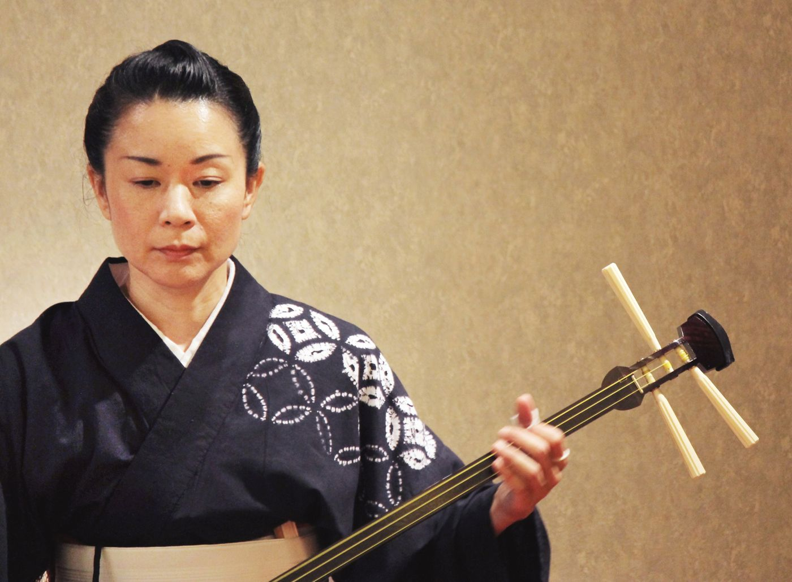

長唄三味線 · 神戸
歌舞伎の舞台の音楽を、
歌舞伎の舞台の音楽を、
自分の手で。
長唄の演奏家と向かい合い、間近で三味線の音を聴き、はじめての一節を弾く。1回1〜2名さままでの、貸切の60分です。
- 初心者歓迎
- 英語・日本語
- 60分
- 貸切（1〜2名）
- 1名 ¥20,000

岳亭「三味線の調弦」メトロポリタン美術館（CC0）
この体験の演奏家

杵屋 佐次円きねや さじまろ
長唄三味線 · 長唄佐門会 師範 · 演奏歴30年
長唄三味線ひとすじ30年。神戸のお稽古場で、あなたを迎えます。
1996年に長唄三味線の道に入り、2003年に名取、2011年からは長唄佐門会の師範。神戸で長唄と三味線の教室「にゃが唄塾」を主宰し、毎年秋に演奏会を開いています。
プロフィールを読む
この体験でできること
聴く。弾く。合わせる。
聴
間近で聴く
演奏家が、すぐ目の前で弾きます。撥が糸と皮を打つ音、絹糸の余韻。劇場の客席では味わえない距離です。
弾
歌舞伎の一節を弾く
体験用の簡単な曲ではなく、実際に歌舞伎で演奏される曲の一節を弾きます。構え方と撥の持ち方から始めます。
合
演奏家と合わせる
あなたの三味線に、演奏家が合わせます。最後は掛け声とともに締めくくり、その様子を動画に残せます。
長唄とは
歌舞伎を支える音
歌舞伎の幕が開くと、舞台にはすでに演奏家が並んでいます。唄を受け持つ唄方（うたかた）と、三味線を受け持つ三味線方（しゃみせんかた）です。
この音楽が「長唄」です。約300年前の江戸で生まれ、いまも歌舞伎の舞踊で演奏されています。情景を描き、踊りを支え、物語の山場を盛り上げる音楽です。
歌舞伎を観た人は多くても、その音楽を間近で聴き、自分で弾いたことのある人は、ほとんどいません。


舞台の右手には、三味線を手にした演奏者。歌舞伎は、はじまりから音楽とともにありました。
菱川師宣「中村座内外図屏風」17世紀
AMANEKUについて
AMANEKUの想い
長唄は、限られた演奏家によって受け継がれています。聴く人も年々少なくなっています。西日本で長唄三味線を弾くプロは、ほんのわずかです。
AMANEKUは演奏家と一緒に体験をつくり、旅行者が音楽と、その奏者に直接出会える機会を届けています。演奏家には毎回、演奏料をお支払いします。演奏家からお金をいただくことはありません。
創業者は、子どものころから長唄三味線を習ってきました。